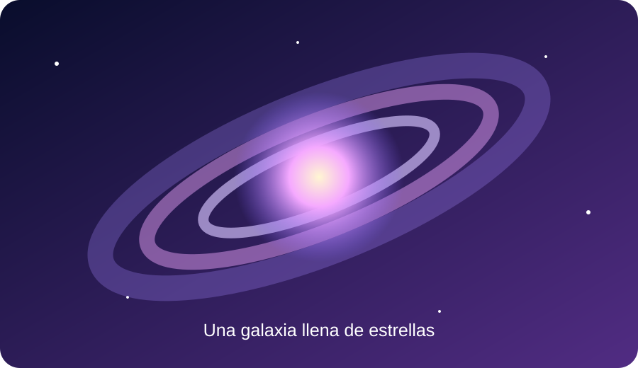
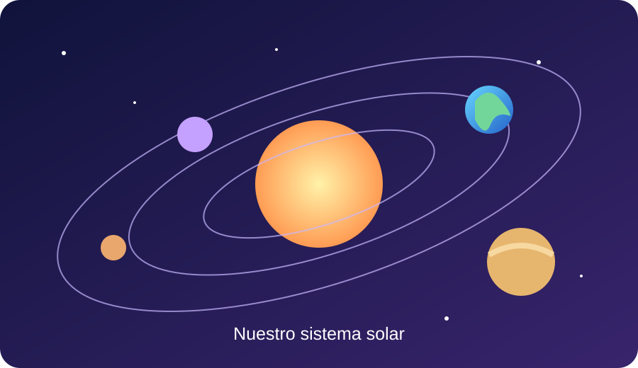
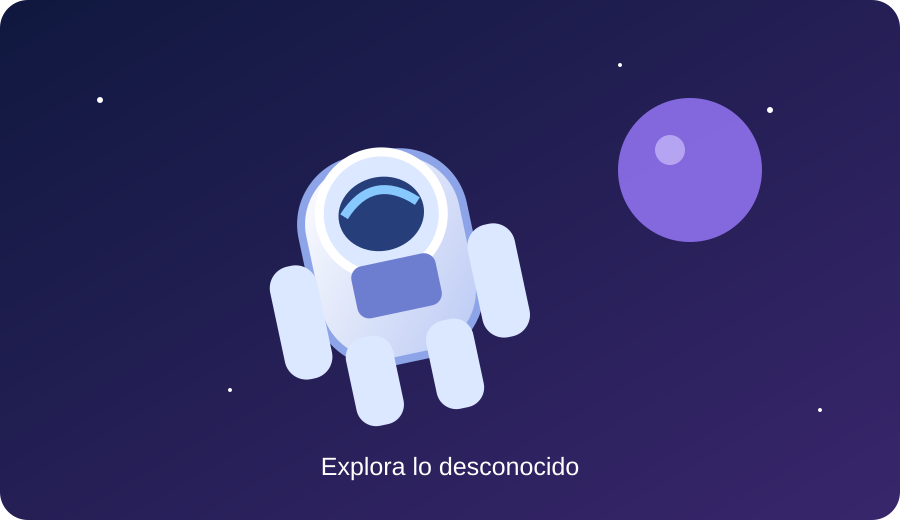

La Vía Láctea
Es la galaxia donde se encuentra nuestro sistema solar. Tiene forma espiral y contiene miles de millones de estrellas.
UN VIAJE POR EL COSMOS
Un pequeño recorrido por los planetas, las galaxias y los misterios que hacen del universo un lugar extraordinario.
Comenzar el viaje →01 / NUESTRO VECINDARIO
Ocho planetas giran alrededor del Sol. Cada uno tiene características únicas y un paisaje completamente diferente.

El Sol es la estrella que mantiene unido nuestro sistema solar gracias a su gravedad. A su alrededor viajan planetas, lunas, asteroides y cometas.
02 / CIUDADES DE ESTRELLAS
Las galaxias son enormes conjuntos de estrellas, gas, polvo y materia oscura unidos por la gravedad.

Es la galaxia donde se encuentra nuestro sistema solar. Tiene forma espiral y contiene miles de millones de estrellas.
Las estimaciones científicas indican que el universo observable contiene una cantidad enorme de galaxias.
Un cosmos por descubrir ✦03 / MÁS ALLÁ DE LA TIERRA
La exploración espacial utiliza telescopios, satélites, sondas y misiones tripuladas para conocer mejor el universo.

Gracias a la ciencia y la tecnología podemos observar objetos muy distantes, estudiar otros planetas y comprender mejor nuestro lugar en el cosmos.
“El universo no solo está ahí afuera: también despierta nuestra curiosidad.”
— Una invitación a explorar